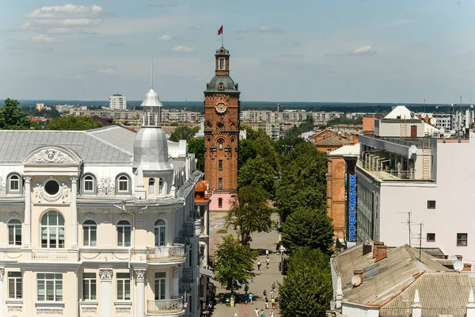

Вінниця — найбільше місто Поділля, розміщене на перехресті головних шляхів з Києва, Львова, Одеси, що розвинулось на берегах річки Південний Буг.
Напевне, саме тому місто поєднує у собі безліч культур, так як навіть на центральній вулиці, Соборній, через дорогу співіснують собор, костел і синагога, а в самому місті можна з Варшави потрапити на Париж, прогулятись через Корею на Єрусалим і відвідати Чорнобиль лише за годину, тому що місто радо зустрічає нових поселенців і назавжди зберігає згадку про них.
Історія Вінниці наповнена легендами, починаючи із версій про заснування міста і її назву, закінчуючи дбайливим переплетінням вуличок, які ще декілька століть тому спускались у лабіринти-катакомби, та досі приховують таємниці минулих століть.
Символом міста є Водонапірна вежа, яка за час свого існування змінила не тільки мешканців, але і своє призначення. А від вежі можна потрапити на дві набережні: одна веде до всім відомого фонтану Рошен, де панує настрій свята і шум води переплітається з радісним гомоном людей, в той час як інша набережна, це колишній притулок яхт-клубу, і зараз охоплена полоном парку, створює атмосферу спокою та усамітнення.
Тому радимо вам приїхати і самостійно прогулятись містом, яке, у свій час, зачарувало Коцюбинського та Пирогова.
